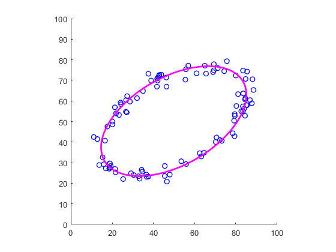

Contents
Use explicit representation
center = [50 50];
radii = [40 20];
theta = 30;
elli0 = [center radii theta];
figure; hold on; axis square; axis([0 100 0 100]);
drawEllipse(elli0, 'lineWidth', 2, 'color', 'b');
Fit an ellipse to a set of points
nPoints = 100;
ti = rand(nPoints, 1) * 2 * pi;
pts = ellipsePoint(elli0, ti) + randn(nPoints, 2) * 2;
elli = fitEllipse(pts);
figure; hold on; axis square; axis([0 100 0 100]);
drawPoint(pts, 'linewidth', 1, 'color', 'b');
drawEllipse(elli, 'lineWidth', 2, 'color', 'm');

Equivalent ellipse from a set of points
nPoints = round(ellipseArea(elli));
pts0 = zeros(nPoints, 2);
for iPoint = 1:nPoints
while true
pt = rand([1 2]) * 100;
if isPointInEllipse(pt, elli0)
pts(iPoint,:) = pt;
break;
end
end
end
elli = equivalentEllipse(pts);
figure; hold on; axis square; axis([0 100 0 100]);
drawPoint(pts, 'b.');
drawEllipse(elli, 'lineWidth', 2, 'color', 'm');
drawEllipseAxes(elli, 'lineWidth', 2, 'color', 'm');